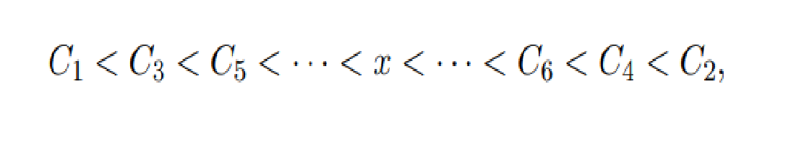
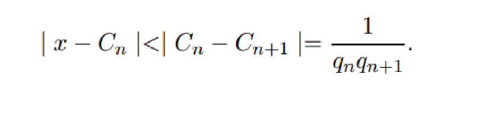

Teoremas
Ahora se van a utilizar las convergentes de una fraccion continua simple
para encontrar aproximaciones racionales para un numero irracional x.
[1.] Teorema: Sea Cn = Pn /qn la convergente n-enesima de la fraccion continua simple [a1, a2, ...] que representa al numero x, entonces:
|x - (Pn / qn) | < | x - (Pn-1 / qn-1) |
[2.] Teorema: Sea Cn = Pnqn la convergente n-esima de la fraccion continua simple que representa al numero real x, entonces
| X - Pnqn | < 1 / q2n
Demostracion: Como las convergentes de la fraccion continua simple que representa al numero x satisfacen las desigualdades

Entonces cualquier valor de n, x siempre esta entre Cn y Cn+1 y por lo tanto tenemos que:

Sabemos que qn+1 ≥ qn para todo n ≥ 1 , luego qnqn+1 ≥ q2n y por lo tanto concluimos que:
| x - Cn| < 1/q2n